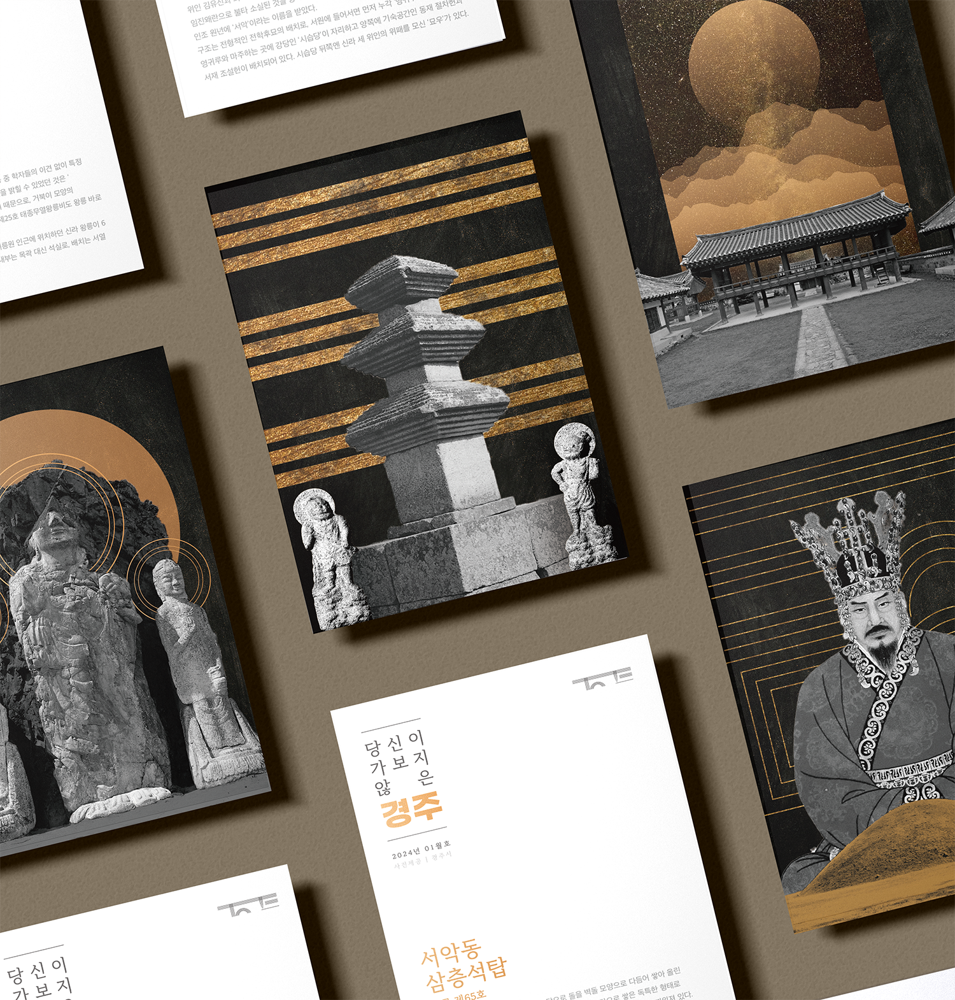
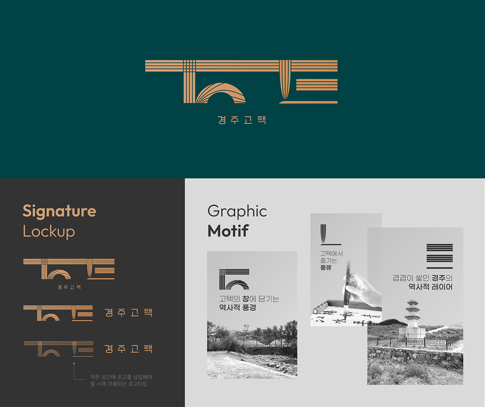

Rebranding Gyeongju Gotaek Hanok Stay
2023F Identity Design Final Project | Sep 2023 - Dec 2023
Introduction
Gyeongju Gotaek is a social enterprise that operates three traditional Korean Hanok stays and three modern accommodations.
What makes Gyeongju Gotaek unique is the opportunity to stay inside a Joseon Dynasty-era village school or historically significant traditional houses. These accommodations are nestled in a lesser-known yet historically rich area, surrounded by remnants of the Silla Dynasty dating back to the 7th century.
Challenge
Despite these distinctive features, Gyeongju Gotaek currently lacks a cohesive identity design system, and its logo fails to stand out among competitors.
To address this, I initiated a rebranding project targeting adventurers, traditional art enthusiasts, and those seeking a private and unique experience.
Brand Essence
A Hanok Stay Where I Layer My Story
The renewed brand identity of Gyeongju Gotaek centers around “layers” as its key concept. Guests add their own stories atop the rich layers of history from the Silla and Joseon Dynasties. As a social enterprise, Gyeongju Gotaek contributes to this ongoing narrative by preserving cultural heritage and supporting the local community, weaving a new layer into the legacy of Gyeongju.
Brand Promise
For adventurers and those seeking a private, unique experience, Gyeongju Gotaek offers “The Gyeongju You’ve Never Been To.” This guide reveals hidden spots near the stays, where guests can enjoy peace and tranquility away from the crowds, uncovering the lesser-known charm of Gyeongju.
Historic Sites Photo Credit | Gyeongju City
For traditional culture enthusiasts, Gyeongju Gotaek offers an authentic artistic experience
within a genuine traditional house. Guests are provided with a traditional stationery set,
allowing them to try their hand at writing and drawing in the same way people did in the past.
Brand Design System
The logo of Gyeongju Gotaek captures the essence of the brand, with “layers” as the central graphic motif. It symbolizes the stories guests will experience during their stay, including the historic views seen through the windows, the traditional art enjoyed in an authentic old house, and the rich historical layers of Gyeongju itself.

The color scheme of Gyeongju Gotaek symbolizes the tranquil night sky and traditional house
paintings with deep / teal green, while gold represents the rich history of Gyeongju, often
referred to as the “Golden City,” and the bright moon that lights the night.
The basic pattern is inspired by the work of Dae Sung Park, a modern Korean traditional
artist, and reflects the historical context of the stay’s location. The pattern is formed by
placing the pre-defined pattern elements along evenly spaced lines, incorporating the “layer”
graphic concept to stay consistent with the brand identity.